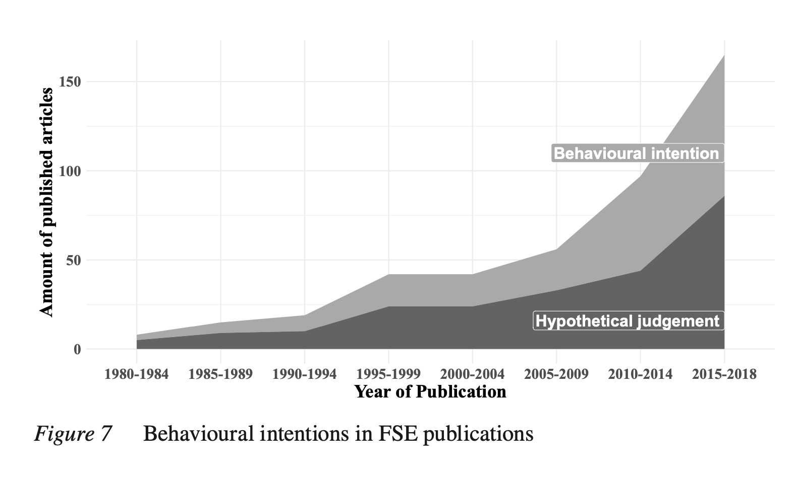

The Past, Present and Future of Factorial Survey Experiments
A Review for the Social Sciences
Factorial survey experiments (FSEs) are increasingly used in the social sciences. This paper provides a review about the use of FSEs and aims to answer three research questions. (1) How has this specific research field developed over time? (2) Which methodological advances have been made in FSE research and to what degree are they applied in empirical studies? (3) Which questions remain unresolved and should be addressed in future research? Thus, we conducted a literature review of FSEs published between 1982 and 2018. Our findings show first that the field is developing quickly and that FSEs are becoming increasingly accepted in different research areas. Thereby, FSEs are being widely used not only regarding study attitudes, but also to explore the determinants of behaviour as the next graph shows.

Second, most research applies state-of-the-art techniques in terms of statistical analysis; however, to a lesser extent, studies rely on more sophisticated sampling procedures to draw samples from a large vignette universe. Third, several methodological questions remain unresolved concerning the realism and complexity of vignettes, social desirability, and the predictive validity of FSEs regarding behaviour due to their hypothetical nature. Against this background, we call for more methodological research to assess the general applicability of FSEs for different research areas. Further, our review suggests the need for better documentation and reporting standards to evaluate methodological aspects of FSEs.
Cite this article:
Treischl, E., & Wolbring, T. (2022): The Past, Present and Future of Factorial Survey Experiments: A Review for the Social Sciences. methods, data, analyses, 16(2), 30. doi:https://doi.org/10.12758/mda.2021.07
- Posted on:
- May 5, 2022
- Length:
- 2 minute read, 255 words
- See Also: